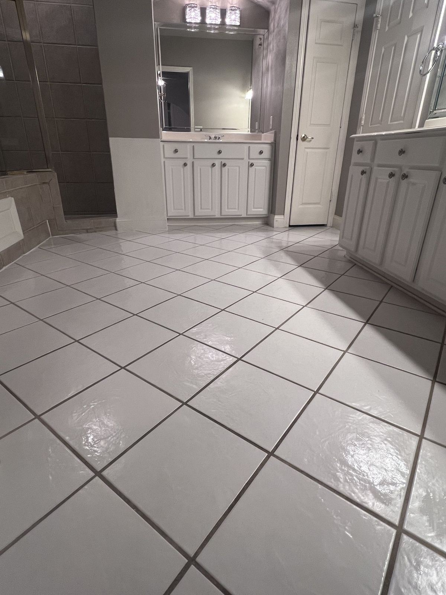

House Cleaning FAQ
Quick answers about booking, pricing, what's included and what to expect from Salt of the Earth Cleaning Co. Still have a question? Call (469) 210-8005 — we're open 7 days, 8:30 AM–7:30 PM.

Booking & scheduling
How do I book a cleaning?
Use our instant quote. Enter your address and home details, choose your service, frequency and add-ons, then pick a date and arrival window. Prefer to talk? Call (469) 210-8005.
How fast can I see a price?
Right away. The instant quote shows your price on screen as you choose your options — usually in about two minutes.
What arrival windows do you offer?
You'll choose an arrival window when you book. Available windows show in the booking calendar.
Will I get the same cleaner every time?
We work hard to send the same trusted cleaner for every visit, especially for recurring clients.
Do I need to be home during the cleaning?
No. Many clients leave a key, lockbox or entry code. We treat your home the same whether you're there or not.
What's your cancellation policy?
Please give us at least 48 hours' notice to cancel or reschedule. Late cancellations may be subject to a fee — it helps us keep things fair for every client.
Pricing & payment
How is pricing calculated?
By your home's size, the type of clean, its current condition and any add-ons you choose. You'll see the full price before you book.
Do you offer discounts?
Yes. For a limited time, weekly, every-other-week and monthly clients get a reduced rate on every visit compared to one-time cleans.
What payment methods do you accept?
All major credit and debit cards. You book online, and payment is collected after your clean is complete.
Services
What's the difference between standard and deep cleaning?
Standard cleaning covers the essentials in every room — kitchens, bathrooms, dusting and floors. Deep cleaning adds detail work like baseboards, blinds, switches, cabinet fronts, grout and the inside of the oven and fridge. Standard cleaning · Deep cleaning
Which should I book first?
If your home hasn't been professionally cleaned in the last couple of months, start with a deep clean. Then a recurring plan keeps it there at a lower rate per visit.
Do you do move-in and move-out cleaning?
Yes — for renters, buyers, sellers and property managers. Move-in / move-out cleaning
Do you clean baseboards, cabinets and appliances?
Yes. Every deep clean includes spot-cleaned baseboards and cabinet fronts and handles wiped; we wipe the inside of cabinets too if they're empty. Inside the oven and inside the refrigerator are included in deep and move-in/move-out cleans, and they're add-ons on a standard clean.
Can I customize my cleaning?
Absolutely. Add notes to your booking with any rooms or areas you want us to focus on, and choose add-ons like inside the oven, inside the refrigerator or interior windows.
Do you offer other services?
We also do express cleans, one-time cleaning for parties and holidays, apartment and condo cleaning, post-construction cleaning, Airbnb and short-term rental turnovers and office cleaning for small businesses. We also offer house cleaning gift cards. Call (469) 210-8005 to talk through what you need.
Trust & safety
Are your cleaners background checked?
Yes. Every team member goes through a background check before joining our team.
Are your cleaners English-speaking?
Yes. Our cleaners speak English, so it's easy to explain exactly what you want and get updates during your clean.
What cleaning products do you use?
Professional-grade, eco-conscious products that are effective and gentle on your home's surfaces.
Can I provide my own products?
Of course. Leave them out and mention it in your booking notes.
What if something gets damaged?
We treat your home with great care. If anything ever happens, we'll tell you right away.
Are you pet-friendly?
Yes. Lots of our clients have dogs and cats, and we work calmly around them. Tell us about your pets in the booking form, including whether they'll be loose, crated or in a closed room, so we can plan for them. We use eco-friendly, pet-safe products. Pet-friendly house cleaning
Service area
What areas do you serve?
We're based in Richardson and clean homes all over Dallas–Fort Worth, on both the Dallas and Fort Worth sides. We have local pages for Richardson, Plano, Garland, North Dallas, Murphy, Wylie, Sachse, Allen and Rowlett, and you can see every city and town we serve. Enter your address in the instant quote to confirm, or give us a call.
What are your hours?
Monday through Sunday, 8:30 AM–7:30 PM. You can book online any time.